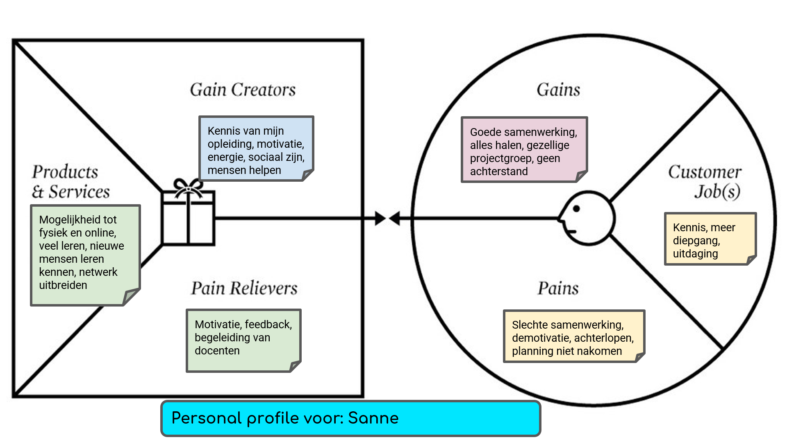

Week 1 - Smart Working You
Het Value Propositions Canvas zorgt ervoor dat je erachter komt wat je nodig hebt, wat extra waarde oplevert en wat je als nadelig ervaart. Dit model hebben we gebruikt ter verdieping op onze motivatie voor de minor en visie op ons zelf. Met twee klasgenoten heb ik in kaart gebracht wat mij motiveert, waar ik blij van word en wat me demotiveert.

Gains en Gain Creators
Gains Hoe defineer je succes?
- Goede samenwerking: een goede samenwerking motiveert mij enorm.
- Alles halen: als alles gehaald is, is de minor succesvol afgerond.
- Gezellige projectgroep:als er gezelligheid is binnen een projectgroep verloopt de samenwerking ook soepeler.
- Geen achterstand: als ik niet achterloop voel ik me niet gestrest.
Gain Creators Welke persoonlijke activa kun je inzetten?
- Kennis van mijn opleiding: één van de leuke dingen aan deze minor is dat de studenten allemaal verschillende opleidingen volgen. Binnen de klas is dit enorm gevarieerd, ook in mijn projectgroep hebben we alle vier een andere achtergrond. Met mijn kennis van bedrijfskunde zie ik bepaalde dingen van een andere hoek dan bijvoorbeeld Sjoerd die automotive engeneering studeert. De kennis die ik heb van processen, informatiesystemen binnen een organisatie en marketing bijvoorbeeld deel ik graag met mijn projectgroep. Wij delen alle vier onze kennis en zo hebben we inzicht vanuit vier verschillende invalshoeken.
- Motivatie: motivatie zorgt ervoor dat ik zin heb om aan dingen te werken. Dat verhoogt de fijne werksfeer. Met een hoge motivatie is het leuk om dingen af te maken.
- Energie: als ik ergens energie van krijg wil ik graag aan dingen werken. Meestal als ik nieuwe dingen leer krijg ik daar energie van.
- Sociaal zijn: in een nieuwe klas is het belangrijk om sociaal te zijn. Dit maakt de sfeer in de klas fijner en zo motiveert de hele klas elkaar om er een leuk half jaar van te maken. Ik probeer zo behulpzaam en aardig mogelijk te zijn naar alle klasgenoten.
- Mensen helpen: als ik mensen help krijg ik er vaak iets voor terug. Ik heb van mijn projecten op Avans altijd feedback gekregen dat ik heel behulpzaam ben, deze eigenschap wil ik graag vasthouden.
Pains en Pain Relievers
Pains Welke dingen kunnen succes in de weg staan?
- Slechte samenwerking: ik heb op Avans ooit een groepsgenoot gehad die niks deed. Hij ging overal tegenin en kwam bijna nooit opdagen, waardoor de samenwerking slecht verliep. Hierdoor raakten ik en mijn groepsgenoten gedemotiveerd.
- Demotivatie: demotivatie zorgt ervoor dat ik er niet meer mijn best voor ga doen. Daardoor haal ik vaak deadlines niet en ga ik mijn planning niet na.
- Achterlopen en planning niet nakomen: ik ben best wel perfectionistisch. In combinatie met faalangst zorgt dat ervoor dat ik taken vaak uitstel. Dit heeft als gevolg dat er steeds meer druk op een deadline komt te staan. Dit wil ik graag voorkomen door een planning te maken die ik na kom.
Pain Relievers Wat heb je nodig om de barrières weg te nemen?
- Motivatie: motivatie zorgt ervoor dat ik zin heb om aan dingen te werken. Dat verhoogt de fijne werksfeer. Met een hoge motivatie is het leuk om dingen af te maken.
- Feedback: ik zou tijdens het werken aan portfolio en project graag feedback willen van mijn klasgenoten en teamgenoten. Dit ga ik doen door vragen te stellen. Ik pas mijn werk dan aan op de feedback.
- Begeleiding van docenten: het is belangrijk dat de docenten ons goed begeleiden. Ik (en ik hoor het van meerdere klasgenoten) weet niks van het vak technology.
Customer Jobs
Wat moet deze minor mij geven?
- Kennis: ik zou graag kennis op willen doen over onderwerpen die ik nog niet ken. Het vak technology is allemaal nieuw voor me. Ook kon ik hier voor nog geen site maken met html.
- Meer diepgang: tijdens de opleiding bedrijfskunde heb ik het gehad over data, erp-systemen en dashboards. Hier is vooral de theorie uitgelegd, ik zou graag willen weten hoe het in werkelijkheid gaat en het toepassen op een echte casus. Daarvoor is het project tijdens de minor.
- Uitdaging: de minor is geen makkelijke minor. Ik vind het leuk om uitgedaagd te worden om nieuwe dingen te leren en hier mijn best voor te doen.
Products en Services
Hoe ziet mijn ideale minor traject eruit?
- Mogelijkheid tot fysiek en online les: door de maatregelen van de overheid zullen niet alle lessen fysiek worden. Ik vind het fijn dat de mogelijkheid er is om online les te volgen. Een nadeel aan online les is voor mij concentratie. Ik kan mijn hoofd er minder goed bijhouden als ik een paar uur lang naar mijn computerscherm kijk. Aan het begin van de minor zijn er veel fysieke lessen geweest. Hierdoor leer je je klasgenoten ook goed kennen en kan je een praatje of grapje maken met ze. Dat voegt voor mij veel waarde toe aan de minor. Via een computer ben ik toch wat terughoudender dan ik in het echt ben.
- Veel leren: ik ben heel leergierig. Tijdens de minor zijn enorm veel nieuwe onderwerpen aan bod gekomen waar ik me in heb verdiept. Onderwerpen die bij bijvoorbeeld bij smart start en smart technology aan bod kwamen waren vaak nieuw voor mij.
- Nieuwe mensen leren kennen: ik vind het altijd leuk om nieuwe mensen te leren kennen. Dat is tijdens deze minor zeker gelukt. Ik kende op twee personen na niemand in de klas. Met mijn groepsgenoten kan ik heel goed overweg.
- Netwerk uitbreiden: ik probeer zo veel mogelijk mensen die workshops kwamen geven toe te voegen op LinkedIn en heb ook al mijn klasgenoten toegevoegd op LinkedIn. Hopelijk komt dit ooit nog van pas, bijvoorbeeld bij het zoeken naar een afstudeerstage of een baan.